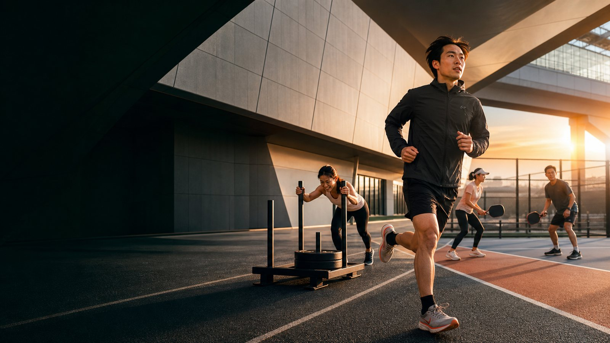

ランニング初心者に必要なもの7選
まず優先する道具と、習慣が続いてから検討できる物を整理します。
ランニングの道具を見る →START ACTIVE
最初から全部そろえる必要はありません。今の目的に合う記事から、必要な物・借りられる物・あとで買う物を整理できます。

BEGINNER GUIDES
まず優先する道具と、習慣が続いてから検討できる物を整理します。
ランニングの道具を見る →
競技形式を踏まえ、初参加の装備とシューズ選びを確認できます。
HYROXの準備を見る →
体験日に持っていく物と、継続を決めてから買う道具を分けて案内します。
ピックルボールの道具を見る →